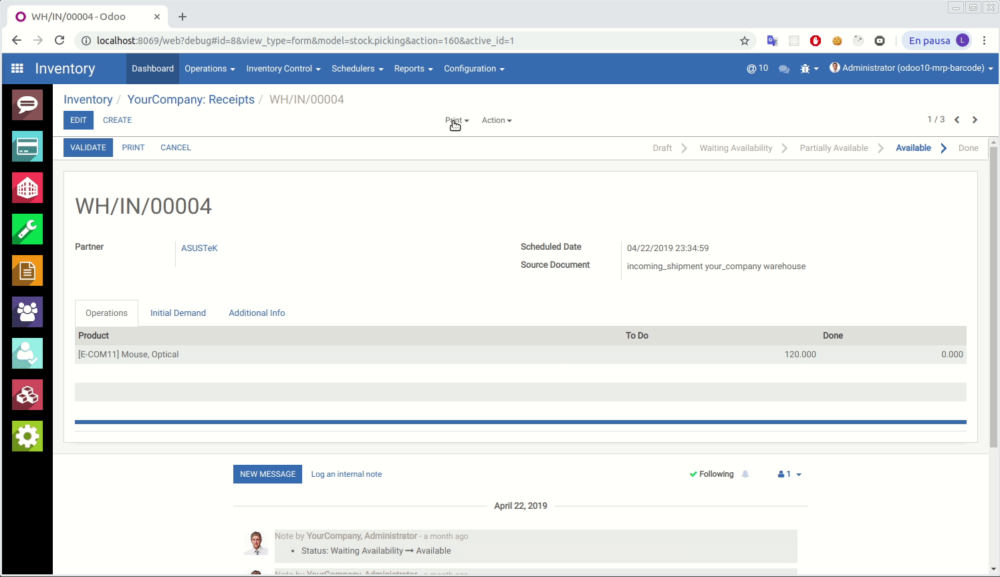
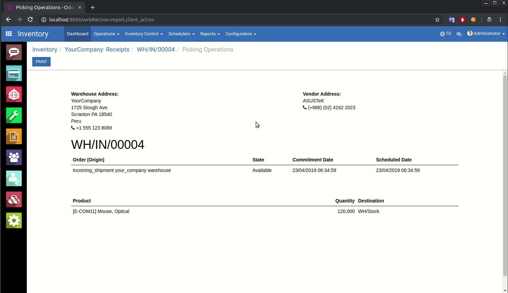
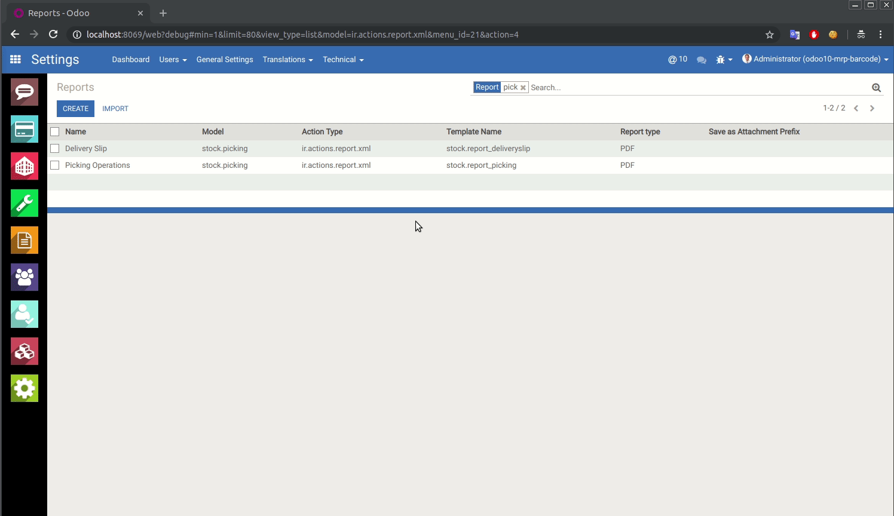
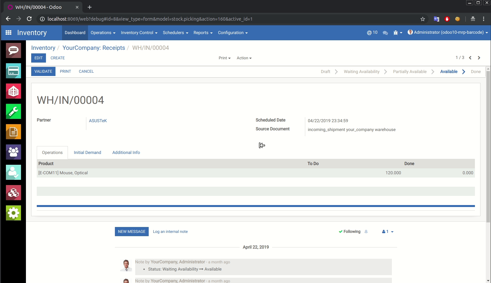

Enhance your Odoo experience with flexible PDF report handling. Choose to print directly, download, or open reports in new tabs with customizable default settings.
Transform how your users interact with PDF reports in Odoo with these innovative features
Print PDF reports directly from your browser without additional steps. Streamline your workflow with instant printing capabilities that save time and improve productivity.
Download PDF reports directly to your computer with a single click. Perfect for archiving, sharing, or offline access to important business documents.
Open PDF reports in new browser tabs for quick preview and review. Ideal for comparing documents or referencing information while working in Odoo.
Experience the intuitive modal interface and seamless configuration options

Users can choose from three convenient options when generating any PDF report in Odoo.

Seamless integration with all Odoo report types, maintaining consistency across your workflow.

Set default behaviors for each report type through Odoo's intuitive settings interface.

Once configured, default options are executed automatically, streamlining repetitive tasks.
Enhance productivity and user experience with these key benefits
Reduce clicks and waiting time with direct actions and customizable defaults.
Intuitive interface that adapts to user preferences and workflow requirements.
Simple setup process with granular control over each report type's behavior.
Works with all Odoo PDF reports across all modules and custom reports.
Built with modern web technologies and best practices for optimal performance
Get started in minutes with these simple installation steps
Download the PDF Report Options module from the Odoo App Store or install directly from your Odoo Apps menu.
Navigate to Apps in your Odoo instance, search for "PDF Report Options", and click Install. The module will be automatically configured.
Go to Settings → Technical → Reports to configure default behaviors for specific report types according to your preferences.
Generate any PDF report in Odoo and enjoy the new options modal with print, download, and open capabilities.